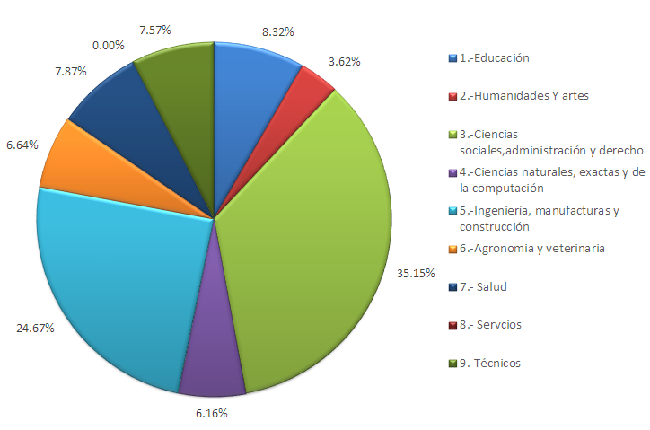
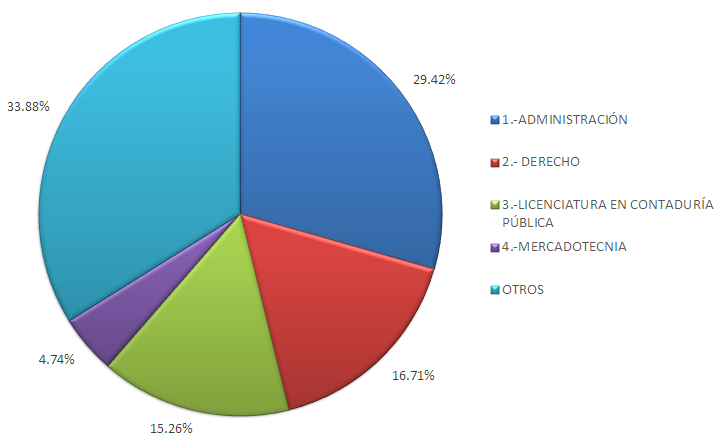
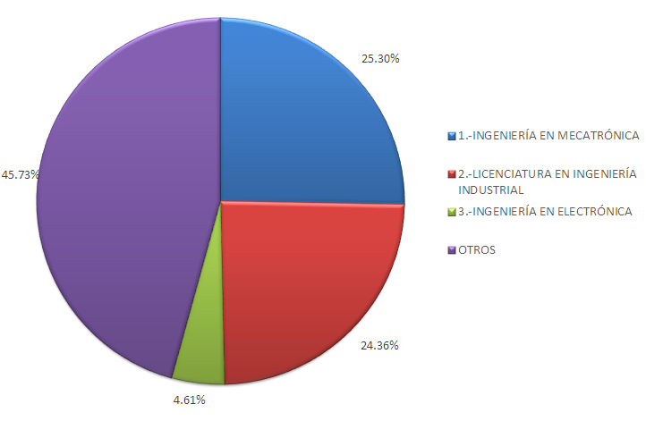

En los primeros meses del año, entre enero y abril, miles de jóvenes laguneros deberán de decidir qué carrera universitaria estudiar y en qué institución, tomando en cuenta una amplia oferta educativa (la Comarca es una de las zonas del país con más universidades por habitante). De acuerdo con el Anuario Estadístico de la ANUIES, en la Zona Metropolitana de La Laguna (ZML) se contabilizan 47 instituciones, 30 de ellas se encuentran en Torreón.
La matrícula de universitarios en La Laguna, según datos del 2015 de la Asociación Nacional de Universidades e Instituciones de Educación Superior (ANUIES) es de cerca de 43,000 estudiantes y el promedio de graduados es de 7,190 jóvenes. Se calcula que la matrícula de nuevo ingreso será de más de 11,310 estudiantes en la ZML.
Las áreas de estudio con más demanda en la región son las Ciencias Sociales, Administración y Derecho con una matrícula de 11,208 estudiantes; de acuerdo con las estadísticas de ANUIES en 2016. Los estudiantes inscritos en estas carreras ocupan el 35.15% de la matrícula universitaria.
En seguida con casi 25% de la población de alumnos, se encuentran las carreras en las áreas de Ingeniería, Manufacturas y Construcción con más de 7,800 inscritos. El tercer lugar la ocupa la carrera de Educación, ésta sola profesión concentra a 2,652 estudiantes en la Comarca. Asimismo las carreras ubicadas en el área de la Salud cuentan con más de 2,510 alumnos y en el área de Agronomía y Veterinaria existen más de 2,118 estudiantes.
Los jóvenes que han decidido estudiar una carrera técnica son alrededor de 2,412 según datos de ANUIES y en las áreas de humanidades y artes hay cerca de 1,155 alumnos inscritos.
Asimismo, el Top 4 de las carreras más estudiadas en Ciencias Sociales, Administración y Derecho se divide en: 3,297 alumnos en una licenciatura en administración, 1,873 en la licenciatura en Derecho y 1,710 en la licenciatura en Contaduría Pública.
En el área de Ingeniería el primer lugar lo ocupa la carrera de Mecatrónica con 1,990 alumnos seguida de Ingeniería Industrial con 1,916 y de Ingeniería Electrónica con 363. La carrera de Ingeniería en Sistemas cuenta con 1,140 estudiantes.
Se identifica la necesidad de contar con más estudiantes inscritos en carreras dirigidas a la Industria Manufacturera, Industria Automotriz e Ingeniería Ambiental; que son algunas de las principales actividades económicas de la región lagunera.
Distribución de la matrícula por área de estudio

Carreras de ciencias sociales

Carreras de ingeniería

Recomendaciones de CIDAC
Recientemente el Centro de Investigación y Desarrollo A.C. (CIDAC) realizó en conjunto con el IMPLAN el estudio Profesionistas Torreón, con el objetivo de medir la brecha de competencias laborales existente en la región lagunera. Es decir, conocer si las empresas de Torreón encuentran las competencias que requieren los jóvenes egresados de las Instituciones de Educación Superior (IES).
Entre los principales resultados, se encontró que la brecha de competencias es amplia. Sin embargo, hay signos positivos como es la existente vinculación entre las empresas y las universidades.
La vinculación: "es una práctica que otorga múltiples beneficios a los actores más relevantes de esta ecuación, tales como: jóvenes, IES y empresas", cita el estudio.
"En este sentido, en Torreón el 83% de las IES entrevistadas tienen alguna forma de colaboración con las empresas. Este resultado es alentador ya que significa que los canales de comunicación y cooperación entre el sector productivo y educativo están abiertos en la localidad. La modalidad de estos esquemas de vinculación más frecuente son las prácticas profesionales de los estudiantes en las empresas, seguido de las estadías o residencias de estudiantes de las IES técnicas, principalmente".
Una de las principales recomendaciones del CIDAC, para las instituciones, los profesores y los alumnos es el desarrollo de competencias blandas, esto es: cultura general, herramientas de comunicación, trabajo en equipo, innovación y emprendedurismo, liderazgo, inteligencia emocional, eficiencia personal, entre otras.
Las empresas le dan una fuerte importancia a este tipo de competencias, en algunos casos, con más énfasis que en las competencias duras. Por tal motivo, CIDAC recomienda: "que las IES - en cooperación con las empresas y otros actores- deben de ser capaces de enseñar y fortalecer estas competencias entre los jóvenes, a pesar de que son habilidades que no necesariamente se enseñan de forma tradicional en un salón de clases".
Fuentes
- Investigación Profesionistas Torreón del Centro de Investigación para el Desarrollo, A.C. (CIDAC) 2016.
- Anuario Estadístico de la Asociación Nacional de Universidades e Instituciones de Educación Superior (ANUIES) 2014-2015.